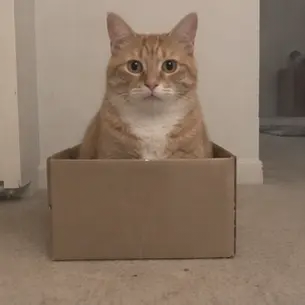
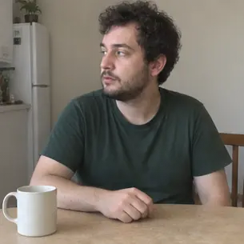
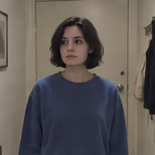

26 · ORIGINAL FRAME ANIMATION
Show / hide loop

I checked. Still outside.
3.67s · 305 × 305 · Silent
A cat dips into a cardboard box, pops back up and stares.
Download GIFDownload WebP
Possible interpretations
- I checked and immediately regretted it.
- I am hiding from a tiny responsibility.
- I heard my name.
How it was made
Sixteen generated poses, cropped and timed with FFmpeg. No imported footage or reference images. Small pose and background jumps remain visible.
Original generated sheet · Frame sequence
GIF 1.06 MB · WebP 0.32 MB
27 · ORIGINAL FRAME ANIMATION
Show / hide loop

Coffee in theory.
3.75s · 305 × 305 · Silent
An empty-handed sip, a confused glance, then eye contact.
Download GIFDownload WebP
Possible interpretations
- My routine started before my brain.
- I forgot the essential part.
- I am pretending this is enough.
How it was made
Sixteen generated poses, cropped and timed with FFmpeg. No imported footage or reference images. Small pose and background jumps remain visible.
Original generated sheet · Frame sequence
GIF 0.96 MB · WebP 0.34 MB
28 · ORIGINAL FRAME ANIMATION
Show / hide loop

I was fixing my hair.
3.75s · 305 × 305 · Silent
A cheerful wave becomes an embarrassed hair adjustment.
Download GIFDownload WebP
Possible interpretations
- That greeting wasn't for me.
- I am recovering from a social mistake.
- I changed my mind halfway through.
How it was made
Sixteen generated poses, cropped and timed with FFmpeg. No imported footage or reference images. Small pose and background jumps remain visible.
Original generated sheet · Frame sequence
GIF 1.12 MB · WebP 0.07 MB